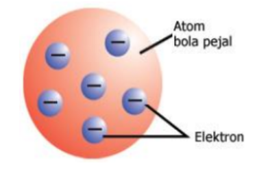
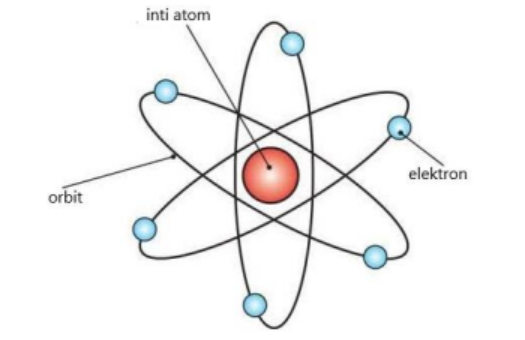

Kimia Kelas 10

Selamat datang di pembelajaran Kimia Kelas 10. Disini, kami akan menuliskan rangkuman dari materi Hukum Dasar Kimia yang dijelaskan di kelas.
Model Atom
Para ilmuwan merumuskan berbagai model atom. Berikut model atom yang dirumuskan peneliti zaman dulu:
- Model Atom John Dalton. John Dalton adalah ilmuwan yang pertama mengembangkan model atom pada 1803 hingga
1808. Hipotesis Dalton digambarkan dengan model atom sebagai bola pejal seperti tolak peluru. Teori ini
didasarkan pada anggapan:
- Semua benda tersusun atas atom
- Atom tidak dapat dibagi maupun dipecah menjadi bagian lain
- Atom tidak dapat dicipta maupun dihancurkan
- Atom dari unsur tertentu adalah indentik satu terhadap lainnya dalam ukuran, massa, dan sifat-sifat yang lain, namun mereka berbeda dari atom dengan unsur-unsur yang lain
- Perubahan kimia merupakan penyatuan atau pemisahan dari atom-atom yang tak dapat dibagi, sehingga atom tidak dapat diciptakan atau dimusnahkan
- Model Atom Thomson. Pada awal abad ke-20, JJ Thomson menggambarkan atom seperti bola pejal, yaitu bola padat yang bermuatan positif. Di permukaannya, tersebar elektron yang bermuatan negatif. Thomson membuktikan adanya partikel yang bermuatan negatif dalam atom.
- Model Atom Rutherford. Ernest Rutherford, ahli fisika kelahiran Selandia Baru adalah salah satu tokoh yang berjasa dalam pengembangan model atom. Rutherford membuat model atom seperti tata surya, dimana atom adalah bola berongga yang tersusun dari inti atom dan elektron yang mengelilinginya. Selain itu, inti dari atom itu sendiri bermuatan positif, sehingga massa atom terpusat pada inti. Model ini persis seperti bagaimana planet mengelilingi matahari.
- Model Atom Niels Bohr. Niels Bohr, ahli fisika dari Denmark adalah ilmuwan pertama yang mengembangkan teori
struktur atom pada 1913. Teori tentang sifat atom yang didapat dari pengamatan Bohr:
- Atom terdiri dari inti yang bermuatan positif dan dikelilingi oleh elektron yang bermuatan negatif di dalam suatu lintasan.
- Elektron bisa berpindah dari satu lintasan ke lintasan yang lain dengan menyerap atau memancarkan energi sehingga energi elektron atom itu tidak akan berkurang.
- Jika berpindah ke lintasan yang lebih tinggi, elektron akan menyerap energi.
- Jika berpindah ke lintasan yang lebih rendah, elektron akan memancarkan energi.
- Model Atom Mekanika Kuantum. Setelah abad ke-20, pemahaman mengenai atom makin terang benderang. Model atom
modern yang kita yakini sekarang, telah disempurnakan oleh Erwin Schrodinger pada 1926. Schrodinger
menjelaskan partikel tak hanya gelombang, melainkan gelombang probabilitas. Kulit-kulit elektron bukan
kedudukan yang pasti dari suatu elektron, namun hanya probabilitas saja. Awan
elektron di sekitar inti menunjukkan tempat probabilitas ditemukannya elektron yang disebut orbital dimana
orbital menggambarkan tingkat energi elektron. Orbital-orbital dengan tingkat energi yang sama atau nyaris
sama akan membentuk sub-kulit. Kumpulan beberapa sub-kulit akan membentuk kulit. Model atom dengan orbital
lintasan elektron ini disebut sebagai model atom modern atau model atom mekanika kuantum yang berlaku hingga
saat ini
:



